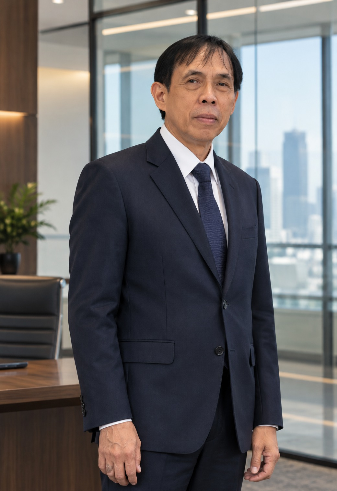

Dewan Komisaris
Supervisory & Strategic Oversight
Board of Commissioners
Andrias Ruddy P
Komisaris Utama · President Commissioner
Andrias Ruddy P memimpin pengawasan strategis dan memastikan implementasi prinsip Good Corporate Governance (GCG) di seluruh lini kegiatan usaha Global Expor Indonesia. Dengan pengalaman mendalam dalam tata kelola komersial, kepatuhan hukum perdagangan lintas batas, dan manajemen risiko, beliau membimbing perseroan untuk senantiasa adaptif terhadap regulasi global serta melindungi kepercayaan para mitra bisnis internasional.
Tanggung Jawab & Fokus Strategis:
Pengawasan & Tata Kelola: Mengawasi jalannya kebijakan perseroan serta memastikan kepatuhan terhadap perundang-undangan ekspor dan hukum internasional.
Manajemen Risiko: Memantau profil risiko ekspor, stabilitas rantai pasok komoditas, dan mitigasi fluktuasi pasar global.
Keberlanjutan & ESG: Mendorong kemitraan yang etis dan berdampak positif bagi petani lokal serta kelestarian sumber daya alam Indonesia.
"Integritas dan kepatuhan terhadap standar internasional adalah pondasi yang tidak dapat ditawar. Komitmen pengawasan kami menjamin setiap mitra global menerima transparansi dan kepastian mutu yang konsisten."